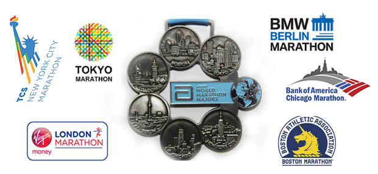
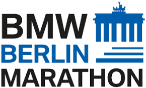
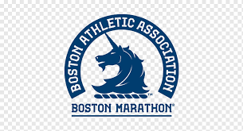
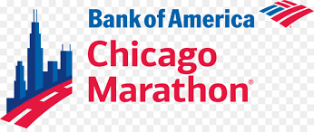
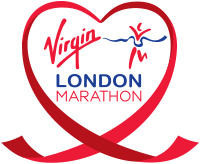
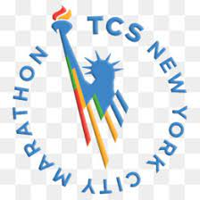
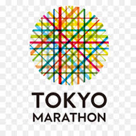

Há quem diga que a melhor forma de conhecer um novo destino é caminhando por seus bairros e pontos turísticos. Mas para muitos corredores, assim como eu, a melhor forma mesmo, é correndo! Eu chamo de maraturismo: quando uno uma maratona a uma viagem internacional.
O que as maratonas de Tóquio, Boston, Londres, Berlim, Chicago e Nova York têm em comum, além da distância de 42.195 metros a ser percorrida? As seis são as chamadas majors, as maiores maratonas do mundo.
Correr todas as majors é o sonho de muitos corredores de rua. A série Abbott World Marathon Majors, como é chamado oficialmente o conjunto das 6 provas, foi criada em 2006, com 5 maratonas: Boston, Londres, Berlim, Chicago e Nova York. Tóquio entrou na lista em 2013.
Desde 2016, é oferecida aos maratonistas que completam as seis provas a medalha Six Star, com o logo de todas as majors. Até hoje, 6.637 maratonistas em todo o mundo, sendo a maioria homens (71,4%), completaram as seis provas e conquistaram a medalha Six Star. 145 brasileiros já ganharam a medalha especial, sendo 44 mulheres e 101 homens.
Para quem deseja correr as provas das Major World Series, veja o que é preciso saber para garantir a medalha da Six Medal e colocar seu nome no Hall da Fama das maiores maratonas do mundo:
– 6 provas: São seis provas que compõem o calendário anual das Majors e você deve completar todas elas para ser elegível para conseguir a medalha.
– 3 em cada semestre: Tóquio, Boston e Londres são realizadas no primeiro semestre e Berlim, Chicago e Nova York no segundo. Não há limite de tempo para completá-las nem ordem. Mas é importante atentar-se às peculiaridades das 6 provas para garantir todas as medalhas Major World Series e ser contemplado com a Six Medal.
| Destino | Atrações/Características |
|---|---|
|  Berlim | A primeira edição da maratona de Berlim foi realizada em 1974, mas só em 1990, ano seguinte à queda do Muro de Berlim, ela começou a atravessar o Portão de Brandenburg e a passar pelas duas partes da capital alemã. O percurso plano torna Berlim uma das maratonas mais rápidas. Não à toa, foi lá, em 2018, que o queniano Eliud Kipchoge cravou o novo recorde mundial masculino no percurso: 2h01m39s. |
| Boston | A de Boston é considerada a maratona mais antiga. Realizada pela primeira vez em 1897, a prova acontece anualmente no Dia dos Patriotas, comemorado na terceira segunda-feira de abril. Também é uma das mais difíceis de conseguir vaga. É preciso realizar uma prova da mesma distância anteriormente para comprovar o tempo de qualificação, de acordo com o gênero e a idade, para poder participar. |
| Chicago | A de Boston é considerada a maratona mais antiga. Realizada pela primeira vez em 1897, a prova acontece anualmente no Dia dos Patriotas, comemorado na terceira segunda-feira de abril. Também é uma das mais difíceis de conseguir vaga. É preciso realizar uma prova da mesma distância anteriormente para comprovar o tempo de qualificação, de acordo com o gênero e a idade, para poder participar. |
| Londres | A maratona de Londres acontece desde 1981. Por ano, cerca de 39 mil maratonistas tomam as ruas da cidade no último domingo de abril. As vagas são distribuídas principalmente por sorteio. |
| Nova York | Nova York é considerada a maior maratona do mundo, com 53 mil corredores de cerca de 140 países participando anualmente. A primeira edição aconteceu em 1970, com quatro voltas em torno do Central Park. Só a partir de 1976, a corrida passou a cruzar os 5 bairros de Nova York. |
|  Tóquio | A maratona de Tóquio é a mais nova das majors e acontece desde 2007, com cerca de 35 mil participantes. Um dos diferenciais da prova é o limite de 7 horas para terminar, o que agrada muito os corredores amadores não tão rápidos que têm o sonho de fazer uma major. |
Para mais informações, visite o site oficial de Destino dos Sonhos.